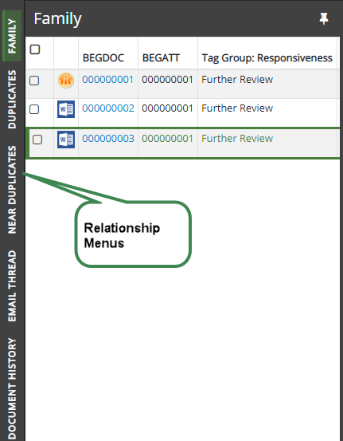

In
Document history: Record of the various actions taken on the document, such as tagging and field edits.
Family
documents: Based on the content of the BEGATTACH field. The exact
details provided in
Near Duplicates and/or Email Threads: Your administrator may configure either or both of these types of relationships.
Duplicate
documents: Based on the content of the MD5HASH field. The exact
details provided in
Similar Documents: Allows documents deemed similar to those documents included through other
This section explains how to view the relationship information that exists for the documents in your case.
Relationship details are presented in the left panel of the Review Pane, as shown in the following figure.

For more information, see